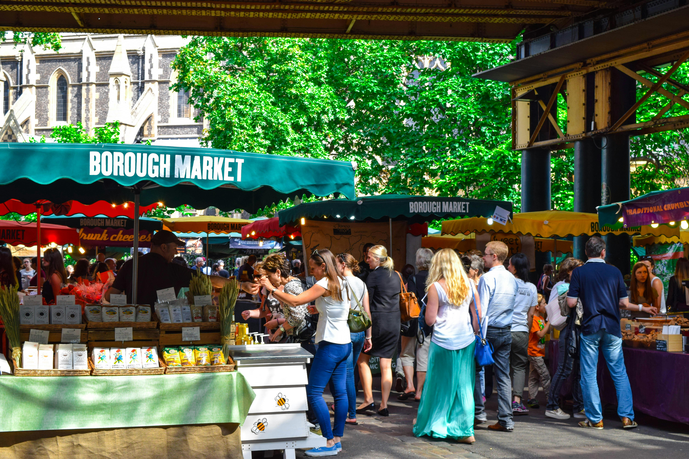
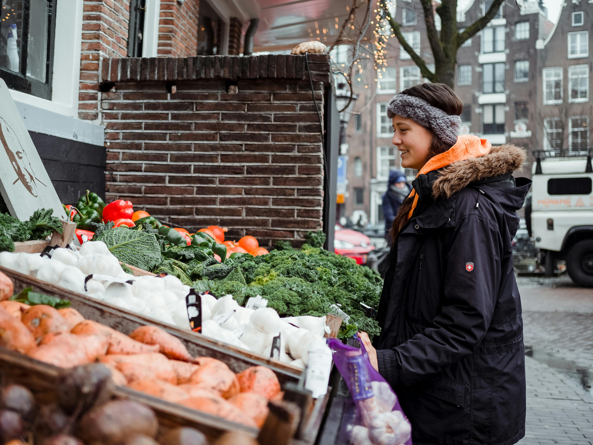
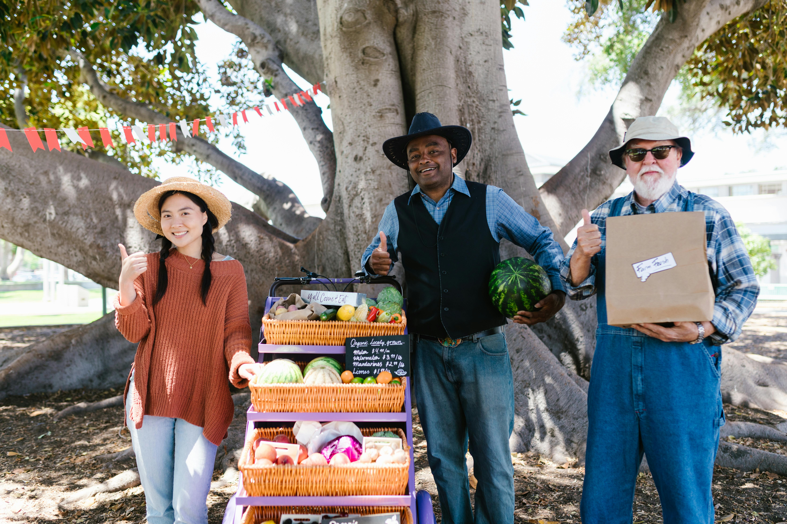

-

Our Story
Founded by a group of dedicated local farmers, Quebec Farmers Shop was born out of a desire to connect our community with the wholesome, nutritious food that our beautiful region has to offer. Each of our farmers brings their own unique expertise and love for the land, ensuring that every product we sell is cultivated with care and integrity.
-

Our Products
At Quebec Farmers Shop, we believe in the power of fresh, seasonal produce. Our selection includes a wide variety of vegetables, from crisp, vibrant greens to hearty root vegetables, all grown without harmful pesticides. In addition to our produce, we offer a range of home-grown items such as homemade preserves, artisanal honey, and freshly baked goods, all crafted with ingredients from our farms.
-

Our Commitment
We are committed to promoting sustainable farming practices that protect our environment and support the health of our community. By choosing Quebec Farmers Shop, you are not only getting the best produce available but also supporting local farmers who are dedicated to preserving the agricultural heritage of Quebec.
-

Visit Us
Come visit us at our charming shop, where you can meet the farmers, learn about our farming practices, and enjoy the freshest produce available. We also offer convenient online shopping and delivery services, so you can enjoy our products from the comfort of your home.